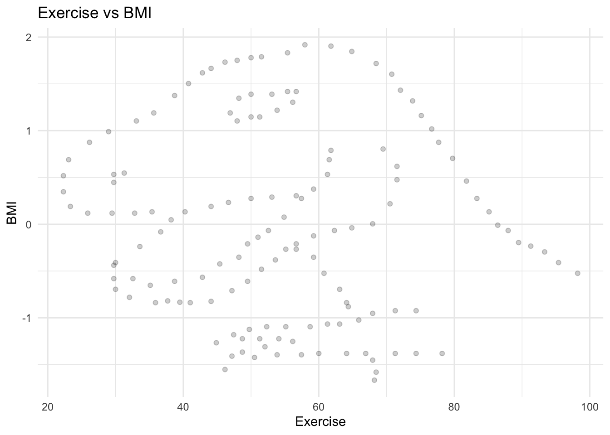
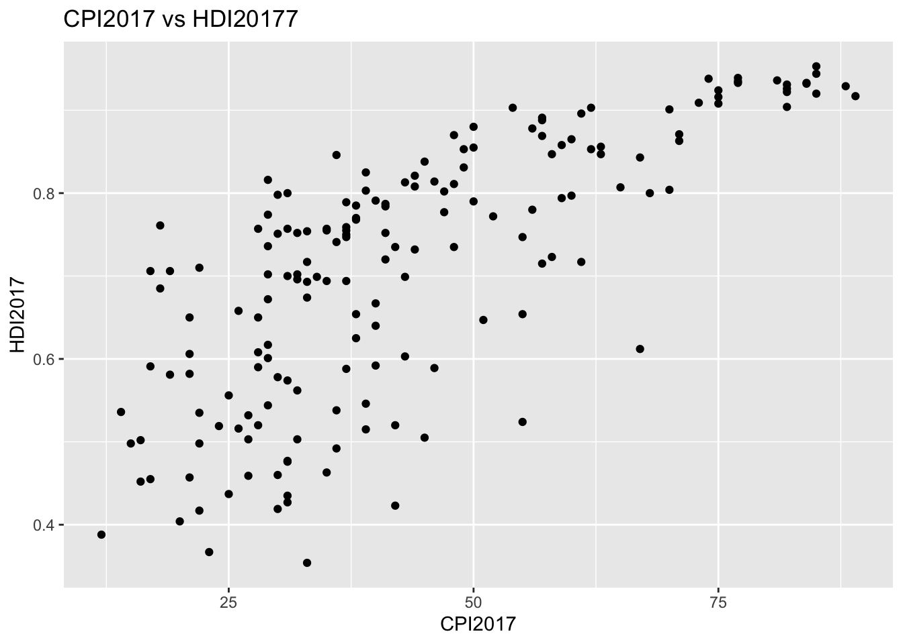
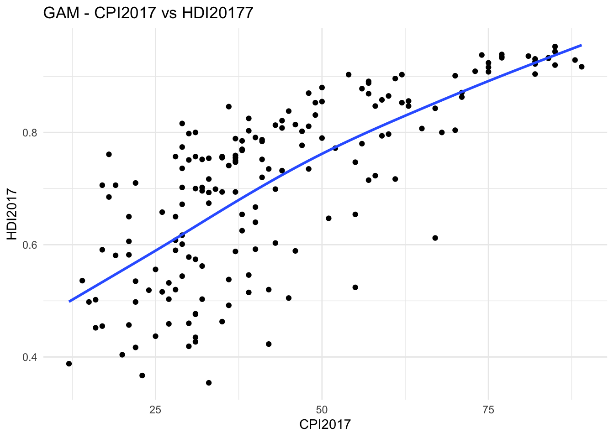
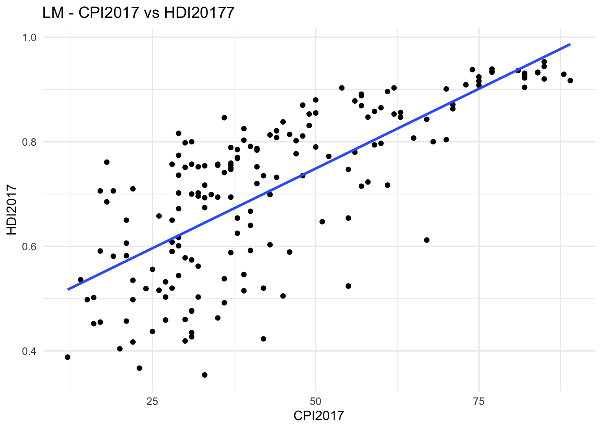
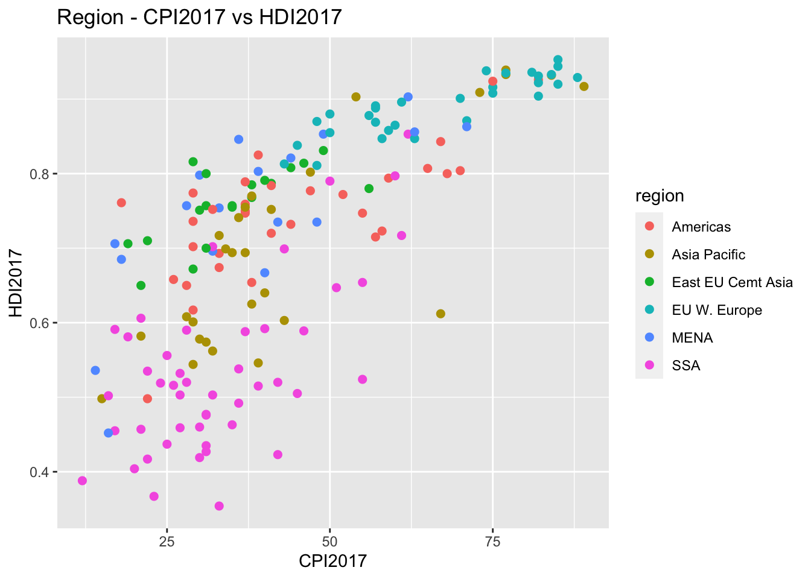
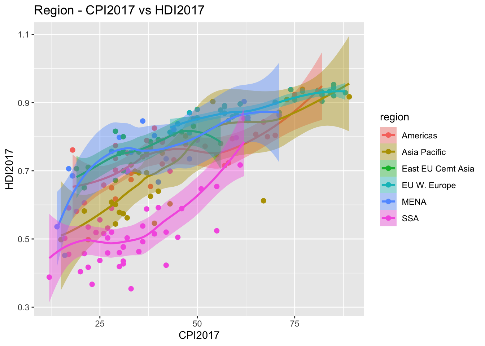
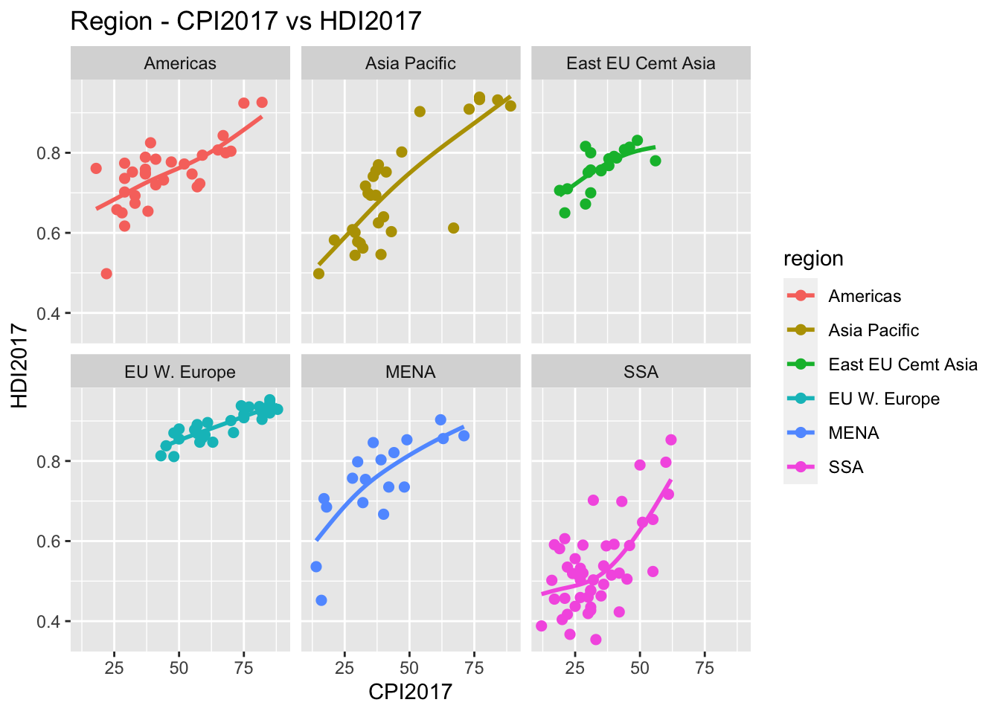
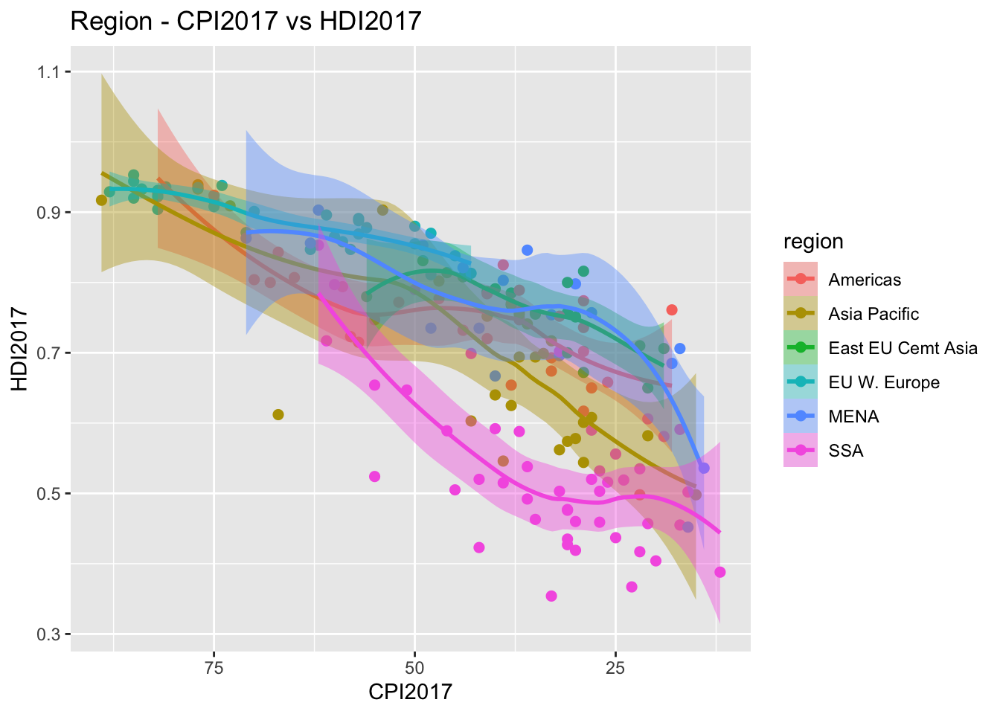

── Attaching core tidyverse packages ──────────────────────── tidyverse 2.0.0 ──
✔ dplyr 1.1.2 ✔ readr 2.1.4
✔ forcats 1.0.0 ✔ stringr 1.5.0
✔ ggplot2 3.4.3 ✔ tibble 3.2.1
✔ lubridate 1.9.2 ✔ tidyr 1.3.0
✔ purrr 1.0.2
── Conflicts ────────────────────────────────────────── tidyverse_conflicts() ──
✖ dplyr::filter() masks stats::filter()
✖ dplyr::lag() masks stats::lag()
ℹ Use the conflicted package (<http://conflicted.r-lib.org/>) to force all conflicts to become errors
# Read in the data exercise_data <-read_csv("https://raw.githubusercontent.com/vaiseys/dav-course/main/Data/visualize_data.csv")
New names:
Rows: 142 Columns: 4
── Column specification
──────────────────────────────────────────────────────── Delimiter: "," dbl
(4): ...1, ...2, Exercise, BMI
ℹ Use `spec()` to retrieve the full column specification for this data. ℹ
Specify the column types or set `show_col_types = FALSE` to quiet this message.
• `` -> `...1`
• `...1` -> `...2`
Before, we see examine anything from the data, write down what you expect the relationship would look like. Do you think people who record more exercise will have more or less BMI?
I think on average people who record more exercise will have a lower BMI (negative correlation). In general, regular exercise is related to a lower BMI because physical activity helps burn calories and build muscle. This must at some point plateau, where more and more extensive exercise does not continue leading to a proportionally lower BMI.
cor(exercise_data$Exercise, exercise_data$BMI)
[1] -0.06447185
Let’s explore this relationship visually. Make a scatterplot with exercise in the x axis and BMI in the y axis.
ggplot(data = exercise_data,aes(x = Exercise , y = BMI)) +geom_point(alpha = .2)+labs(x ="Exercise",y ="BMI",title ="Exercise vs BMI") +theme_minimal()

What do you see?
I see a dinosaurs. LOL
Question 2
library(causact)
WARNING: The 'r-causact' Conda environment does not exist. To use the 'dag_numpyro()' function, you need to set up the 'r-causact' environment. Run install_causact_deps() when ready to set up the 'r-causact' environment.
Attaching package: 'causact'
The following objects are masked from 'package:stats':
binomial, poisson
The following objects are masked from 'package:base':
beta, gamma
Run ?corruptDF and tell me in your own words what CPI2017 and HDI2017 capture.
I would initially think CPI is consumer price index, but in this case CPI2017 is the corruption perception index score for year 2017. This index is on a scale from 0-100 with 0 being the most corrupt and 100 as not corrupt at all.
HDI2017 represents the human development index. It is a measure for a country’s human development achievements or social and economic development. It is determined by the country’s average health, education, and standard of living.
Question 3
Begin by making a scatter plot that shows the relationship between these two variables.
ggplot(data = corruptDF, mapping =aes(x = CPI2017, y = HDI2017)) +labs(x ="CPI2017", y ="HDI2017", title ="CPI2017 vs HDI20177") +geom_point()

Describe the relationship that you see.
Generally, an increase in CPI is matched with an increase in HDI. High levels of CPI are associated with High levels of HDI. There is more noise at lower CPI and HDI levels.
Question 4
Add a layer that captures the overall relationship between these two variables using geom_smooth(). Use both the lm and gam methods.
ggplot(data = corruptDF, mapping =aes(x = CPI2017, y = HDI2017)) +labs(x ="CPI2017", y ="HDI2017", title ="GAM - CPI2017 vs HDI20177") +geom_point() +geom_smooth(method ="gam", se =FALSE)+theme_minimal()
`geom_smooth()` using formula = 'y ~ s(x, bs = "cs")'

ggplot(data = corruptDF, mapping =aes(x = CPI2017, y = HDI2017)) +labs(x ="CPI2017", y ="HDI2017", title ="LM - CPI2017 vs HDI20177") +geom_point() +geom_smooth(method ="lm", se =FALSE)+theme_minimal()
`geom_smooth()` using formula = 'y ~ x'

What are the differences? Which one do you prefer?
Gam seems to measure relationships that are non linear and allows for that flexibility. Whereas, Lm seems to force the relationship to be linear. Visually I have no preferences. But because I do not think this relationship is strictly linear I would prefer gam because it is able to capture that type of relationship.
Question 5
Add a fill and color aesthetic to the graph so that the lines and points are grouped by the variable region.
ggplot(data = corruptDF, mapping =aes(x = CPI2017, y = HDI2017, fill = region, color = region)) +labs(x ="CPI2017", y ="HDI2017", title ="Region - CPI2017 vs HDI2017") +geom_point(size =2)

What do you see? Are patterns clear or is the graph too cluttered? What would be another way to get these trends by region but in a way to would be more legible?
It seems like specific regions have different correlation rates between CPI and HDI. With EU W. Europe having the flattest linear relationship and SSA having the most sloped linear relationship.
I think it would make more sense to face wrap the data or add geom_smooth lines for each region in order to see the different correlations.
ggplot(data = corruptDF, mapping =aes(x = CPI2017, y = HDI2017, fill = region, color = region)) +labs(x ="CPI2017", y ="HDI2017", title ="Region - CPI2017 vs HDI2017") +geom_point(size =2) +geom_smooth(aes(group = region))
`geom_smooth()` using method = 'loess' and formula = 'y ~ x'

ggplot(data = corruptDF, mapping =aes(x = CPI2017, y = HDI2017, fill = region, color = region)) +labs(x ="CPI2017", y ="HDI2017", title ="Region - CPI2017 vs HDI2017") +facet_wrap(~region)+geom_smooth(method ="gam", se =FALSE, aes(color=region))+geom_point(size =2)
`geom_smooth()` using formula = 'y ~ s(x, bs = "cs")'

Question 6
ggplot(data = corruptDF, mapping =aes(x = CPI2017, y = HDI2017, fill = region, color = region)) +labs(x ="CPI2017", y ="HDI2017", title ="Region - CPI2017 vs HDI2017") +geom_point(size =2) +geom_smooth(aes(group = region))+scale_x_reverse()
`geom_smooth()` using method = 'loess' and formula = 'y ~ x'

Question 7
ggplot(data = corruptDF, mapping =aes(x = CPI2017, y = HDI2017, fill = region, color = region)) +labs(title ="Corruption Perceptions vs. Human Development (2017)",subtitle ="Comparison of CPI2017 and HDI2017 by Region",x ="CPI2017",y ="HDI2017",caption ="Data source: CPI data availble from www.transparency.org/cpi" ) +geom_point(size =2) +geom_smooth(aes(group = region))+scale_fill_discrete(name ="Region") +scale_color_discrete(name ="Region")+scale_x_reverse()
`geom_smooth()` using method = 'loess' and formula = 'y ~ x'